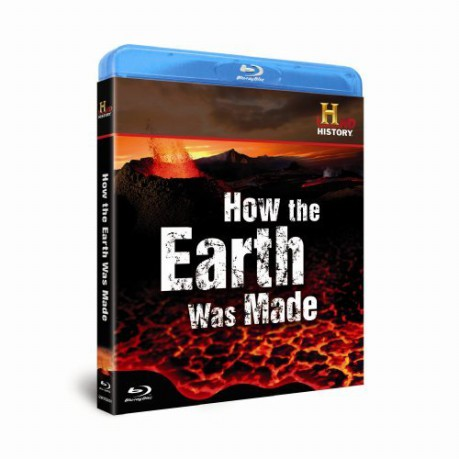

Alternativ: How the Earth Was Made
 
 IMDB-Wertung: 8.0 / 10
IMDB-Wertung: 8.0 / 10  Metascore: 0
Metascore: 0 
Jahr: 2009
Dauer: 45 Minuten
FSK:
Land: England Studio: A&E Television NetworksTonspuren: AAC5.1 - ,
Untertitel:
Auflösung: 1080p (1920x1080) Größe: 8509 MB
Genre: Dokumentation, Geschichte, TV-Serie
Regisseur: Kathryn Johnson, Stefanie Kern, Rachel Scarrott, David Hutt, Kate Dart
Drehbuch: Kate Dart
Soundtrack:
Darsteller:
 Corey Johnson als Himself - Narrator
Corey Johnson als Himself - Narrator- Jonathan Keeble als Himself - Narrator
- Bob Anderson als Himself - Phd., University of Colorado at Boulder
- Andy Bowen als Himself - Woods Hole Oceanographic Inst.
- Laura J. Crossey als Herself - Phd., University of New Mexico
- Dudley Foster als Himself - Woods Hole Oceanographic Inst.
- Gerard Fryer als Himself - Pacific Tsunami Warning Center
- Ken Hon als Himself - University of Hawaii
- Karl E. Karlstrom als Himself - Phd., University of New Mexico
- Andrew Lambert als Himself - Prof., King's College London
- Alan Lester als Himself - Phd., University of Colorado at Boulder
- Fred McLaughlin als Himself - Wyoming State Geological Survey
- Marcia McNutt als Herself - Monterey Bay Aquarium Research Inst.
- Ian Miller als Himself - Denver Museum of Nature & Science
- Willem Molesworth als Himself
- Jacques Piccard als Himself - Trieste Pilot
- Terry Plank als Herself - Lamont-Doherty Earth Observatory
- Mike Poland als Himself - U.S. Geological Survey
- Frank Sansone als Himself - University of Hawaii
- Walter Smith als Himself - Geophysicist, NOAA
- Bob Stern als Himself - Geoscientist, University of Texas
- Jeff Sutton als Himself - Hawaiian Volcano Observatory
- Don Walsh als Himself - Trieste Pilot
- Brittany Brand als Herself - Phd., Geologist, University of Washington
- Tom Casadevall als Himself - Phd., Geologist, U.S. Geological Survey
- Mike Clynne als Himself - Phd., Geologist, U.S. Geological Survey
- Daniel Dzurisin als Himself - Phd., Geologist, U.S. Geological Survey
- Lee Kump als Himself - Geologist, Penn State University
- Dan Miller als Himself - Phd., Geologist, U.S. Geological Survey
- Tom Pierson als Himself - Phd., Hydrologist, U.S. Geological Survey
- Chris Ralph als Himself - Prospector
- Barry Voight als Himself - Phd., Volcanologist, Penn State University
- Richard Waitt als Himself - Phd., Geologist, U.S. Geological Survey
- Paul Wignall als Himself - Geologist, Leeds University
Datei: X:\Dokumentationen\Natur\Entstehung unserer Erde\Entstehung unserer Erde, Die (2009, FSK, 1920x1080).mkv seit 04.03.2015
Festplatte: HD Serien(SU-Z)+Dokus+Musik
 Es gibt insgesamt 35 Filme in der Gruppe 'Dokumentationen\Natur'
Es gibt insgesamt 35 Filme in der Gruppe 'Dokumentationen\Natur'
")